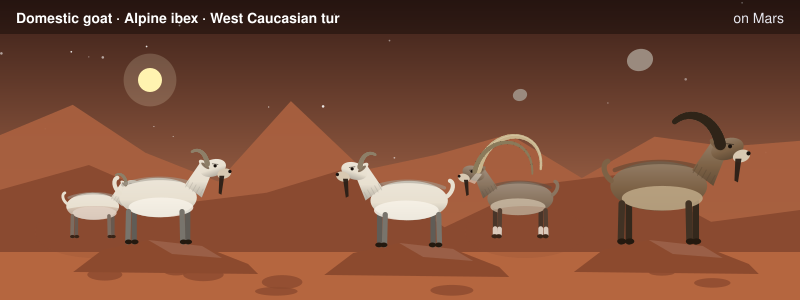
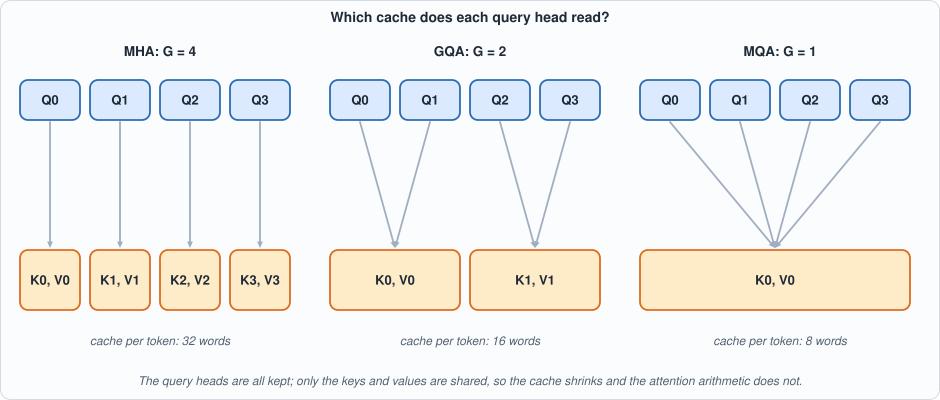
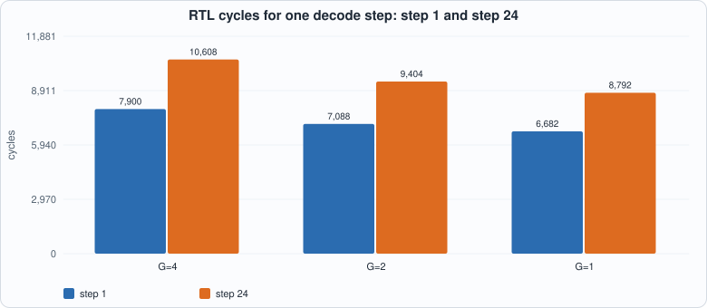
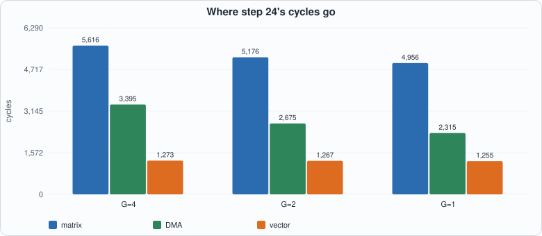
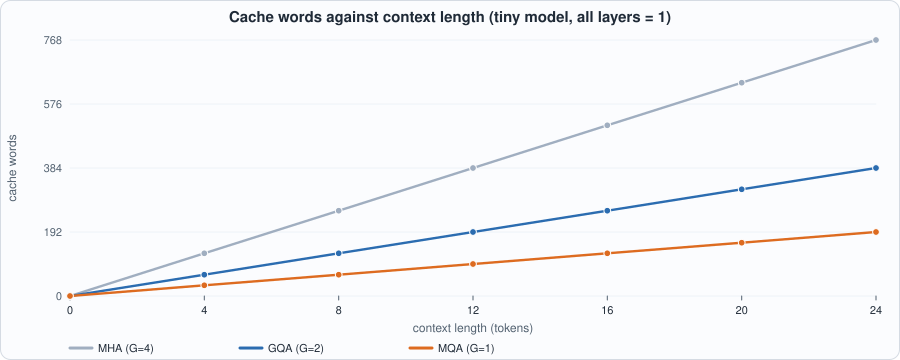
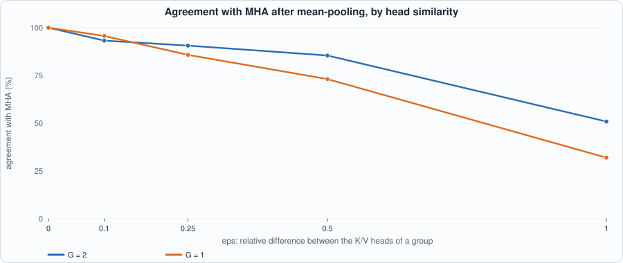
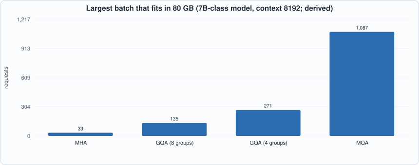
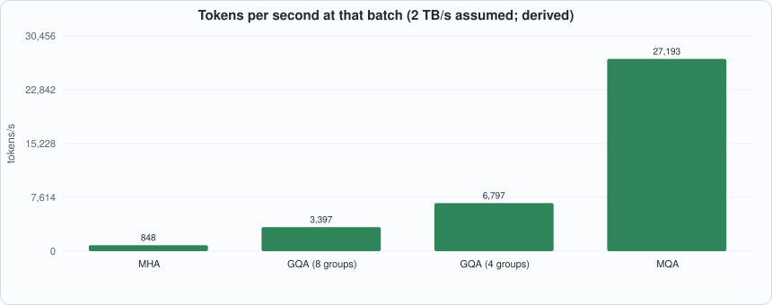

14. Grouped-Query Attention¶

About the animals in this picture and where they are standing
- Domestic goat (Capra hircus) descends from the bezoar ibex and is among the oldest domesticated animals. There are on the order of a billion of them, kept for milk, meat, fibre and as pack animals.
- Alpine ibex (Capra ibex) lives in the European Alps, usually above the tree line on steep rock, and is a famously sure-footed climber. Males carry horns that can reach about a metre. Hunting left only a small remnant, around the Gran Paradiso in Italy, by the early 1800s; reintroductions have since restored it across the Alps.
- West Caucasian tur (Capra caucasica) lives only in the western Caucasus, on steep slopes above the forest line. Its horns are short and heavy, curving outward and back, and it moves up and down cliffs with ease.
The scene is imaginary: it is set on Mars: gravity about 38% of Earth's, a dusty red landscape and two small moons, Phobos and Deimos. The animals are stylised drawings, shown where they could not live, for effect.
What you will see: attention in which several query heads share one set of keys and values. The tiny model of Chapter 12 grows to four query heads; the number of key/value groups G is a knob: G = 4 is ordinary multi-head attention (MHA), G = 2 is grouped-query attention (GQA), G = 1 is multi-query attention (MQA). The compiler of Chapter 11 compiles all three with no new instruction; the chip decodes the same 24 tokens in each case, in both simulators; and you measure what sharing saves (cache, cycles, serving capacity) and what it costs when a model is converted without retraining.
What you need to know first: Chapter 8 (attention and the KV cache), Chapter 9 (the capacity and bandwidth arithmetic of serving), Chapter 11 (the compiler) and Chapter 12 (the tiny model). Appendix E is the primer on attention.
What this chapter builds: model/gqa_lm.py (the model, its float reference, the graph builder and the host loop), model/gqa_tests.py (the software checks), tools/ch14_run.py (tests and the RTL replay), tools/mut_ch14.py, and the running examples tools/ch14_example_a.py and tools/ch14_example_b.py. No hardware and no compiler change: this chapter shows that a technique that matters a great deal for serving is a change of graph, not of chip.
Why share keys and values¶
Chapter 9 ended on a fact: as the batch grows, the KV cache takes over. A request at 8,192 tokens of context holds 2 GiB of cache on a 7B-class model, and the chip's memory fills with caches, not weights. Every decode step also reads the whole cache of every request. The cache is made of keys and values, one pair per head per layer per token. Attention's cost structure suggests an economy: the work of attention is in the queries (each head asks its own question), while keys and values are what is stored. If several query heads read the same keys and values, the cache shrinks by that factor and each head still asks its own question.
- MHA: every query head has its own key and value head. Cache per token:
2 * G * dwithG = H. - MQA (Shazeer, 2019): all query heads share one key/value head (
G = 1): the smallest cache, the largest quality risk. - GQA (Ainslie et al., 2023):
Gbetween 1 andH: the compromise most current open models use (for example 8 groups for 32 query heads).

Figure 14.1: headh reads group h // (H / G). The four query heads are kept in all three variants; only the cache (orange) shrinks.
The model¶
#!/usr/bin/env python3
"""Chapter 14: grouped-query attention (GQA) on the tiny language model.
H = 4 query heads of width d = 4 (D = 16). G key/value groups: G = 4 is multi-head attention (MHA), G = 2 is GQA, G = 1 is multi-query attention (MQA). Query head h reads the keys and values of group g = h // (H // G).
THE FLOATING-POINT REFERENCE uses fused matrices and slices them (Wq is D x D, head h is columns 4h..4h+3), the way a framework would; THE CHIP'S GRAPH uses one small weight per head and per group (Capra has no column slice), and no head sums are fused anywhere. The two are written differently on purpose.
CONVERSION: a trained MHA model is turned into GQA by mean-pooling the key and value projections inside each group (the recipe of the GQA paper); `to_groups` does that. Weights here are constructed or random, not trained, so the accuracy numbers are a stand-in.
"""
import math, os, random, sys
sys.path.insert(0, os.path.dirname(os.path.abspath(__file__)))
os.environ.setdefault("GA2_EXT", "8192")
import capra as C, tiny_lm as T
V = D = 16; H = 4; DH = 4; HID = 32
def mv(x, W): return T.mv(x, W)
def make_mha(kind="structured", seed=1, noise=0.45):
"""An MHA model: fused Wq, Wk, Wv (D x D), Wo (D x D). Built from tiny_lm's constructor so the structured model keeps its designed rule f(t) = 5t+3 mod 16."""
m = T.make_model(kind, seed, noise); m = dict(m); m["H"] = H; m["G"] = H; return m
def to_groups(m, G):
"""Mean-pool the key/value head projections inside each group of H/G heads. Wk, Wv become D x (G*DH)."""
r = H // G; out = dict(m); out["G"] = G
for nm in ("Wk", "Wv"):
W = m[nm]; cols = []
for g in range(G):
for c in range(DH): cols.append([sum(W[i][(g * r + t) * DH + c] for t in range(r)) / r for i in range(D)])
out[nm] = [[cols[c][i] for c in range(G * DH)] for i in range(D)]
return out
def float_step(m, tok, kc, vc, aux=None):
"""One decode step. kc, vc: lists (per position) of G*DH-vectors. Returns logits, k (G*DH), v (G*DH)."""
G = m["G"]; r = H // G; x = m["E"][tok]; q = mv(x, m["Wq"]); k = mv(x, m["Wk"]); v = mv(x, m["Wv"]); K = kc + [k]; Vv = vc + [v]; heads = []
for h in range(H):
g = h // r; qh = q[h * DH:(h + 1) * DH]
sc = [sum(qh[i] * Kp[g * DH + i] for i in range(DH)) / math.sqrt(DH) for Kp in K]; mx = max(sc); e = [math.exp(s - mx) for s in sc]; z = sum(e)
heads += [sum(e[p] / z * Vv[p][g * DH + i] for p in range(len(K))) for i in range(DH)]
att = mv(heads, m["Wo"]); hh = [xi + oi for xi, oi in zip(x, att)]; f2 = mv([max(0.0, t) for t in mv(hh, m["W1"])], m["W2"]); y = [a + b for a, b in zip(hh, f2)]
if aux is not None: aux["attn"] = att
return mv(y, m["Wout"]), k, v
def float_generate(m, start, n):
toks = [start]; kc, vc = [], []
for _ in range(n):
lg, k, v = float_step(m, toks[-1], kc, vc); kc.append(k); vc.append(v); toks.append(lg.index(max(lg)))
return toks
def cache_words_per_token(G): return 2 * G * DH
def build_graph(m, L):
G = m["G"]; r = H // G; g = C.Graph(); x = g.tag(g.input("x", (1, D)), "x")
sl = lambda W, a, b: [row[a:b] for row in W]; w = lambda nm, a: g.weight(nm, a)
Kc, Vc = [], []
for gi in range(G):
k = g.tag(g.matmul(x, w(f"Wk{gi}", sl(m["Wk"], gi * DH, (gi + 1) * DH))), "k"); v = g.tag(g.matmul(x, w(f"Wv{gi}", sl(m["Wv"], gi * DH, (gi + 1) * DH))), "v")
if L > 1: Kg = g.tag(g.concat_rows(g.tag(g.input(f"kc{gi}", (L - 1, DH)), "k"), k), "k"); Vg = g.tag(g.concat_rows(g.tag(g.input(f"vc{gi}", (L - 1, DH)), "v"), v), "v")
else: Kg, Vg = k, v
Kc.append(Kg); Vc.append(Vg); g.output(k, f"k_new{gi}"); g.output(v, f"v_new{gi}")
acc = None
for h in range(H):
gi = h // r; q = g.matmul(x, w(f"Wq{h}", sl(m["Wq"], h * DH, (h + 1) * DH)))
p = g.softmax(g.matmul(q, Kc[gi], transpose_b=True, scale=1 / math.sqrt(DH))); a = g.matmul(p, Vc[gi]); o = g.matmul(a, w(f"Wo{h}", m["Wo"][h * DH:(h + 1) * DH]))
acc = o if acc is None else g.add(acc, o)
g.output(acc, "attn"); hh = g.add(x, acc); y = g.add(hh, g.matmul(g.relu(g.matmul(hh, w("W1", m["W1"]))), w("W2", m["W2"]))); lg = g.matmul(y, w("Wout", m["Wout"]))
g.output(g.argmax(lg), "tok"); g.output(lg, "logits"); return g
def calibrate(m, steps, starts=range(V)):
G = m["G"]; calib = {L: [] for L in range(1, steps + 1)}; rk = rv = rx = 0.0
for s in starts:
toks = [s]; kc, vc = [], []
for L in range(1, steps + 1):
lg, k, v = float_step(m, toks[-1], kc, vc); inp = {"x": [m["E"][toks[-1]]]}
if L > 1:
for gi in range(G): inp[f"kc{gi}"] = [list(r[gi * DH:(gi + 1) * DH]) for r in kc]; inp[f"vc{gi}"] = [list(r[gi * DH:(gi + 1) * DH]) for r in vc]
calib[L].append(inp); rk = max(rk, max(abs(t) for t in k)); rv = max(rv, max(abs(t) for t in v)); rx = max(rx, max(abs(t) for t in m["E"][toks[-1]])); kc.append(k); vc.append(v); toks.append(lg.index(max(lg)))
return calib, {"x": rx, "k": rk, "v": rv}
class Chip:
def __init__(self, m, steps, starts=range(V)):
self.m = m; self.G = m["G"]; self.calib, self.ranges = calibrate(m, steps, starts); self.progs = {}
def program(self, L):
if L not in self.progs: self.progs[L] = C.compile_graph(build_graph(self.m, L), self.calib[L], ranges=self.ranges)
return self.progs[L]
def generate(self, start, n, force=None):
toks = [start]; kc, vc = [], []; rec = []; G = self.G
for L in range(1, n + 1):
P = self.program(L); inp = {"x": [self.m["E"][toks[-1]]]}
if L > 1:
for gi in range(G): inp[f"kc{gi}"] = [r[gi * DH:(gi + 1) * DH] for r in kc]; inp[f"vc{gi}"] = [r[gi * DH:(gi + 1) * DH] for r in vc]
out, mach = C.run(P, inp, machine=True)
rec.append({"L": L, "code": P.code, "ext": C.ext_image(P, inp), "logits": out["logits"][1][0], "tok": out["tok"][0][0][0], "high": P.spad_high, "attn": out["attn"][1][0], "k": [t for gi in range(G) for t in out[f"k_new{gi}"][1][0]], "v": [t for gi in range(G) for t in out[f"v_new{gi}"][1][0]]})
kc.append([t for gi in range(G) for t in out[f"k_new{gi}"][1][0]]); vc.append([t for gi in range(G) for t in out[f"v_new{gi}"][1][0]]); toks.append(force[L] if force else out["tok"][0][0][0])
return toks, rec
if __name__ == "__main__":
m0 = make_mha("structured"); exp = [0]
for _ in range(24): exp.append(T.f_next(exp[-1]))
for G in (4, 2, 1):
m = to_groups(m0, G) if G != 4 else m0; fl = float_generate(m, 0, 24); t, rec = Chip(m, 24).generate(0, 24)
print(f"G={G}: float ok {fl == exp}, chip ok {t == exp}, spad high-water {max(r['high'] for r in rec)}")
Three points need care.
- Two forms, written differently on purpose. The floating-point reference uses fused matrices (
Wq,Wk,WvareD x D; headhis columns4h .. 4h+3) and slices them the way a framework does. The graph that the compiler sees has one small weight per head and per group, because Capra has no column slice. Both describe the same function, and the tests below check that. - No head concatenation. The output projection of a transformer multiplies the concatenation of the head outputs by
Wo. Because[a0 a1 a2 a3] Wo = a0 Wo_0 + a1 Wo_1 + a2 Wo_2 + a3 Wo_3(withWo_hthe rows ofWobelonging to headh), the graph multiplies each head's output by its own slice ofWoand adds. Capra hasmatmulandadd; that is all it needs. - The cache is
Gpairs of small tensors. Each group has its ownkc/vcinput of shape(L-1) x 4, concatenated with the new row by the existingconcat_rows(Chapter 11's concat views, so no copy).
Conversion. A model trained with MHA is turned into GQA by mean-pooling the key and value projections of the heads within each group (to_groups), the recipe of the GQA paper (which then fine-tunes briefly). Here nothing is fine-tuned, so the conversion measures exactly the damage that the fine-tuning exists to repair.
Tests¶
model/gqa_tests.py holds seven groups of checks. The ones that need the most thought are the ones where an obvious test is circular:
#!/usr/bin/env python3
"""Chapter 14: the software checks of the GQA model and its compiled graph (no RTL; the RTL replay is tools/ch14_run.py). Returns a list of problems; empty means all pass.
(1) grouped float step == plain MHA step with replicated K/V heads; (2) compiled == interpreted, and the chip's logits within 15% of float, on random models for G = 4, 2, 1;
(3) the structured model follows f(t) = 5t+3 mod 16 for G = 4, 2, 1; (4) the cache the chip returns has the right shape (G groups of 4 words)."""
import math, os, sys
sys.path.insert(0, os.path.dirname(os.path.abspath(__file__)))
import capra as C, tiny_lm as T, gqa_lm as Q
def replicated(m, mg):
rep = dict(m); r = Q.H // mg["G"]
for nm in ("Wk", "Wv"):
cols = [[mg[nm][i][(h // r) * Q.DH + c] for i in range(Q.D)] for h in range(Q.H) for c in range(Q.DH)]; rep[nm] = [[cols[c][i] for c in range(Q.D)] for i in range(Q.D)]
return rep
def ref_step(m, tok, K, Vv):
"""An independent MHA/GQA attention step, written head by head with an explicit group list and explicit slices (no division arithmetic for the group): returns the attention output (1 x D) before the residual."""
G = m["G"]; group_of = {4: [0, 1, 2, 3], 2: [0, 0, 1, 1], 1: [0, 0, 0, 0]}[G]; x = m["E"][tok]; out = [0.0] * Q.D
q = [sum(x[i] * m["Wq"][i][j] for i in range(Q.D)) for j in range(Q.D)]; k = [sum(x[i] * m["Wk"][i][j] for i in range(Q.D)) for j in range(G * Q.DH)]; v = [sum(x[i] * m["Wv"][i][j] for i in range(Q.D)) for j in range(G * Q.DH)]
Kall = K + [k]; Vall = Vv + [v]
for h in range(4):
g0 = group_of[h] * 4; qh = q[4 * h:4 * h + 4]; s = [sum(qh[i] * kk[g0 + i] for i in range(4)) * 0.5 for kk in Kall]; e = [math.exp(t - max(s)) for t in s]; z = sum(e)
ah = [sum(e[p] * Vall[p][g0 + i] for p in range(len(Kall))) / z for i in range(4)]
for j in range(Q.D): out[j] += sum(ah[i] * m["Wo"][4 * h + i][j] for i in range(4))
return out, k, v
def check_all(steps=8):
P = []
for G in (4, 2, 1): # (5) the grouped step against the independent head-by-head step; (6) the pooled weights against literal averages
m0 = Q.make_mha("random", 5); m = Q.to_groups(m0, G) if G != 4 else m0; kc, vc = [], []; tok = 2
for t in range(5):
aux = {}; lg, k, v = Q.float_step(m, tok, kc, vc, aux); a2, k2, v2 = ref_step(m, tok, kc, vc)
if max(abs(a - b) for a, b in zip(aux["attn"], a2)) > 1e-9: P.append(f"(5) G={G} step {t}: attention output differs from the independent reference")
kc.append(k); vc.append(v); tok = lg.index(max(lg))
m0 = Q.make_mha("random", 5); mg = Q.to_groups(m0, 2)
for i in range(Q.D):
for c in range(4):
if abs(mg["Wk"][i][c] - (m0["Wk"][i][c] + m0["Wk"][i][4 + c]) / 2) > 1e-12 or abs(mg["Wv"][i][4 + c] - (m0["Wv"][i][8 + c] + m0["Wv"][i][12 + c]) / 2) > 1e-12: P.append("(6) pooled weights are not the mean of the heads in the group"); break
for G in (2, 1):
for seed in (1, 2):
m = Q.make_mha("random", seed); mg = Q.to_groups(m, G); rep = replicated(m, mg); kc, vc, kg, vg = [], [], [], []; tok = 3
for t in range(6):
l1, k1, v1 = Q.float_step(rep, tok, kc, vc); l2, k2, v2 = Q.float_step(mg, tok, kg, vg)
if max(abs(a - b) for a, b in zip(l1, l2)) > 1e-9: P.append(f"(1) G={G} seed {seed} step {t}: grouped step differs from the replicated MHA step")
kc.append(k1); vc.append(v1); kg.append(k2); vg.append(v2); tok = l1.index(max(l1))
for G in (4, 2, 1):
for seed in (1, 2):
m0 = Q.make_mha("random", seed); m = Q.to_groups(m0, G) if G != 4 else m0; chip = Q.Chip(m, steps); ft = Q.float_generate(m, 3, steps); toks, rec = chip.generate(3, steps, force=ft); kc, vc = [], []
for L in range(1, steps + 1):
lg, k, v = Q.float_step(m, ft[L - 1], kc, vc); kc.append(k); vc.append(v); ch = rec[L - 1]["logits"]
e = math.sqrt(sum((a - b) ** 2 for a, b in zip(ch, lg)) / sum(b * b for b in lg))
if e > 0.15: P.append(f"(2) G={G} seed {seed} step {L}: chip logits differ from float by {e:.2f}")
aux = {}; Q.float_step(m, ft[L - 1], kc[:-1], vc[:-1], aux); rl = lambda a, b: math.sqrt(sum((x - y) ** 2 for x, y in zip(a, b)) / sum(y * y for y in b))
for nm, ch_, fl_ in (("attention output", rec[L - 1]["attn"], aux["attn"]), ("new key", rec[L - 1]["k"], k), ("new value", rec[L - 1]["v"], v)):
if rl(ch_, fl_) > 0.12: P.append(f"(7) G={G} seed {seed} step {L}: chip {nm} differs from float by {rl(ch_, fl_):.2f}")
Pg = chip.program(L); inp = {"x": [m["E"][ft[L - 1]]]}
if L > 1:
for gi in range(G): inp[f"kc{gi}"] = [r[gi * Q.DH:(gi + 1) * Q.DH] for r in kc[:-1]]; inp[f"vc{gi}"] = [r[gi * Q.DH:(gi + 1) * Q.DH] for r in vc[:-1]]
out = C.run(Pg, inp); ref = C.interpret(Pg, inp)
if any(out[nm][0] != ref[ex["node"]] for nm, ex in Pg.ext.items() if ex["kind"] == "output"): P.append(f"(2) G={G} seed {seed} step {L}: compiled program differs from the interpreter")
exp = [0]
for _ in range(12): exp.append(T.f_next(exp[-1]))
for G in (4, 2, 1):
m0 = Q.make_mha("structured"); m = Q.to_groups(m0, G) if G != 4 else m0
if Q.float_generate(m, 0, 12) != exp: P.append(f"(3) G={G}: float model does not follow the rule")
t, rec = Q.Chip(m, 12).generate(0, 12)
if t != exp: P.append(f"(3) G={G}: chip does not follow the rule")
if Q.cache_words_per_token(4) != 32 or Q.cache_words_per_token(1) != 8: P.append("(4) cache size formula")
return P
if __name__ == "__main__":
p = check_all(); print("problems:", p if p else "none")
- The grouped step equals an MHA step with replicated K/V heads. A GQA model is the same function as an MHA model whose heads in a group carry identical key/value weights. The test builds that MHA model (written without grouping logic) and compares logits.
- Compiled equals interpreted, and chip logits are close to float (random models,
G = 4, 2, 1, relative error under 15%). - The structured model follows its rule
f(t) = 5t + 3 mod 16for all threeG. - The cache-size formula.
- An independent reference step (
ref_step): written head by head with an explicit group list[0,0,1,1]and explicit slices, noh // r. The first mutation run (below) showed why: with checks 1-4 alone, six mutants survived, because checks 1 and 2 compare the model with itself or with a tolerance too loose for attention's small contribution. - The pooled weights equal literal averages (
(W[:,c] + W[:,4+c]) / 2for group 0, written with literal indices). - Attention output, new key and new value are returned by the chip and compared with float tensor by tensor (relative error under 12%): a check at the tensor, not the final logits, where attention's effect is large enough to see.
The RTL replay is in tools/ch14_run.py:
#!/usr/bin/env python3
"""Chapter 14 (grouped-query attention): the tests. (1) the float GQA step equals a plain MHA step whose heads in a group carry identical K/V weights; (2) for every decode step of every G the compiled program equals the plain-Python meaning of the graph (checks as in Chapter 11) and is close to float; (3) the decodes replayed on the RTL in both simulators, with cycle counts; (4) structured model: the rule f(t)=5t+3 mod 16 under MHA, GQA and MQA. Usage: ch14_run.py"""
import math, os, re, sys
os.environ["GA2_EXT"] = "8192"
sys.path.insert(0, os.path.dirname(os.path.abspath(__file__))); sys.path.insert(0, os.path.join(os.path.dirname(os.path.abspath(__file__)), "..", "model"))
import hw, ga2_progs as G_, capra as C, tiny_lm as T, gqa_lm as Q
F = ["rtl/sram.v", "rtl/dma.v", "rtl/systolic.v", "rtl/requant.v", "rtl/exp_lut.v", "rtl/divu.v", "rtl/rowmem.v", "rtl/ga2_vec.v", "rtl/ga2_sm.v", "rtl/ga2_mm.v", "rtl/ga2.v", "tb/extmem_rw.v", "tb/ga2_tb.v"]
def line(out): return ([l for l in out.splitlines() if l.startswith(("PASS", "FAIL", "MISMATCH"))] or out.strip().splitlines()[-2:])[0]
N = 24; exp = [0]
for _ in range(N): exp.append(T.f_next(exp[-1]))
print("== 1. the grouped float step equals an ordinary MHA step with replicated K/V heads (independent form: 4 full heads, no grouping logic)")
worst = 0.0
for seed in (1, 2, 3):
m = Q.make_mha("random", seed); mg = Q.to_groups(m, 2); rep = dict(m) # rebuild an MHA model whose heads 0,1 and 2,3 share K/V weights
for nm in ("Wk", "Wv"):
cols = []
for h in range(4):
g = h // 2
for c in range(Q.DH): cols.append([mg[nm][i][g * Q.DH + c] for i in range(Q.D)])
rep[nm] = [[cols[c][i] for c in range(Q.D)] for i in range(Q.D)]
kc = vc = []; kg = vg = []; kc, vc, kg, vg = [], [], [], []; tok = 3
for _ in range(6):
l1, k1, v1 = Q.float_step(rep, tok, kc, vc); l2, k2, v2 = Q.float_step(mg, tok, kg, vg); worst = max(worst, max(abs(a - b) for a, b in zip(l1, l2)))
kc.append(k1); vc.append(v1); kg.append(k2); vg.append(v2); tok = l1.index(max(l1))
print(f" 3 random models x 6 steps: largest logit difference {worst:.2e} (should be rounding only)")
print("\n== 2. compiled program == plain-Python meaning of the graph, for every step of every G (structured model); and distance from floating point")
res = {}
for G in (4, 2, 1):
m0 = Q.make_mha("structured"); m = Q.to_groups(m0, G) if G != 4 else m0; chip = Q.Chip(m, N); toks, rec = chip.generate(0, N); res[G] = (toks, rec, chip)
bad = 0; kc, vc = [], []; rel = []
for L in range(1, N + 1):
P = chip.program(L); inp = {"x": [m["E"][toks[L - 1]]]}
if L > 1:
for gi in range(G): inp[f"kc{gi}"] = [r[gi * Q.DH:(gi + 1) * Q.DH] for r in kc]; inp[f"vc{gi}"] = [r[gi * Q.DH:(gi + 1) * Q.DH] for r in vc]
out = C.run(P, inp); ref = C.interpret(P, inp); bad += any(out[nm][0] != ref[e['node']] for nm, e in P.ext.items() if e['kind'] == 'output')
lg, k, v = Q.float_step(m, toks[L - 1], kc, vc); ch = out["logits"][1][0]; rel.append(math.sqrt(sum((a - b) ** 2 for a, b in zip(ch, lg)) / sum(b * b for b in lg)))
kc.append(k); vc.append(v)
print(f" G={G}: steps where compiled != interpreted: {bad}/{N}; relative logit error vs float: mean {100*sum(rel)/N:.1f}%, worst {100*max(rel):.1f}%; scratchpad high-water {max(r['high'] for r in rec)} words")
print("\n== 3. the rule f(t) = 5t+3 mod 16 under MHA, GQA, MQA (24 tokens from token 0)")
for G in (4, 2, 1): print(f" G={G}: float {Q.float_generate(Q.to_groups(Q.make_mha('structured'), G) if G != 4 else Q.make_mha('structured'), 0, N) == exp} chip {res[G][0] == exp}")
print("\n== 4. the decodes replayed on the RTL")
tot = {}
for G in (4, 2, 1):
toks, rec, chip = res[G]; words = [len(rec)]
for r in rec: words += G_.record(r["code"], r["ext"])
open(os.path.join(hw.ROOT, "out", "ga2_programs.hex"), "w").write("\n".join("%08x" % (w & 0xFFFFFFFF) for w in words) + "\n"); cnt = {}
for name, fn in (("Icarus", hw.sim_icarus), ("Verilator", hw.sim_verilator)):
rc, out = fn(F, "ga2_tb", defines=("EXTW=8192", "DUMP")); print(f" G={G} {name:10s}{line(out)} (exit {rc})")
cnt[name] = {int(mm.group(1)): [int(q) for q in mm.groups()[1:]] for mm in re.finditer(r"COUNTERS (\d+) (\d+) (\d+) (\d+) (\d+) (\d+)", out)}
assert cnt["Icarus"] == cnt["Verilator"]; tot[G] = cnt["Icarus"]
print(f"\n{'G':>3s} {'kv words/token':>15s} {'instr step 24':>14s} {'cycles step 1':>14s} {'cycles step 24':>15s} {'24 steps':>9s} (matrix / DMA / vector at step 24)")
for G in (4, 2, 1):
c = tot[G]; print(f"{G:3d} {Q.cache_words_per_token(G):15d} {c[N-1][4]:14d} {c[0][0]:14d} {c[N-1][0]:15d} {sum(c[i][0] for i in range(N)):9d} {c[N-1][1]} / {c[N-1][2]} / {c[N-1][3]}")
To compile and run: python3 tools/ch14_run.py (about 30 seconds). Recorded output:
== 1. the grouped float step equals an ordinary MHA step with replicated K/V heads (independent form: 4 full heads, no grouping logic)
3 random models x 6 steps: largest logit difference 0.00e+00 (should be rounding only)
== 2. compiled program == plain-Python meaning of the graph, for every step of every G (structured model); and distance from floating point
G=4: steps where compiled != interpreted: 0/24; relative logit error vs float: mean 1.2%, worst 1.6%; scratchpad high-water 856 words
G=2: steps where compiled != interpreted: 0/24; relative logit error vs float: mean 1.1%, worst 1.4%; scratchpad high-water 608 words
G=1: steps where compiled != interpreted: 0/24; relative logit error vs float: mean 1.1%, worst 1.4%; scratchpad high-water 592 words
== 3. the rule f(t) = 5t+3 mod 16 under MHA, GQA, MQA (24 tokens from token 0)
G=4: float True chip True
G=2: float True chip True
G=1: float True chip True
== 4. the decodes replayed on the RTL
G=4 Icarus PASS: 24 programs match the Python reference (memory and all five cycle counters), 223384 cycles in total (exit status 0) (exit 0)
G=4 Verilator PASS: 24 programs match the Python reference (memory and all five cycle counters), 223384 cycles in total (exit status 0) (exit 0)
G=2 Icarus PASS: 24 programs match the Python reference (memory and all five cycle counters), 198308 cycles in total (exit status 0) (exit 0)
G=2 Verilator PASS: 24 programs match the Python reference (memory and all five cycle counters), 198308 cycles in total (exit status 0) (exit 0)
G=1 Icarus PASS: 24 programs match the Python reference (memory and all five cycle counters), 186110 cycles in total (exit status 0) (exit 0)
G=1 Verilator PASS: 24 programs match the Python reference (memory and all five cycle counters), 186110 cycles in total (exit status 0) (exit 0)
G kv words/token instr step 24 cycles step 1 cycles step 24 24 steps (matrix / DMA / vector at step 24)
4 32 161 7900 10608 223384 5616 / 3395 / 1273
2 16 142 7088 9404 198308 5176 / 2675 / 1267
1 8 132 6682 8792 186110 4956 / 2315 / 1255
Reading the output. Part 1: the grouped float step and the replicated-MHA step agree to the last bit. Part 2: for every one of the 24 steps of every G, the compiled program equals the plain-Python meaning of the graph (0 mismatches), and the logits are within 1.6% of floating point. Part 3: all three variants follow the rule. Part 4: Icarus and Verilator agree with the Python reference on memory and on all five cycle counters, and the table is the measured cost.
Cost on the chip (measured)¶

Figure 14.2: RTL cycles of one decode step, at the first and the last step. Sharing saves 11% of the cycles atG = 2 and 17% at G = 1 over 24 steps.
| G | cache words / token | instructions at step 24 | cycles, step 1 | cycles, step 24 | 24 steps |
|---|---|---|---|---|---|
| 4 (MHA) | 32 | 161 | 7,900 | 10,608 | 223,384 |
| 2 (GQA) | 16 | 142 | 7,088 | 9,404 | 198,308 |
| 1 (MQA) | 8 | 132 | 6,682 | 8,792 | 186,110 |
Where do the savings come from? Two places, and only one is the cache:

Figure 14.3: all three components fall. The matrix time falls because fewer key and value projections are computed; the DMA time falls because fewer key/value weights and fewer cache words are loaded.- The cache (grows with the context): at step 24 the chip loads
23 * 32 = 736cache words for MHA, 368 for GQA and 184 for MQA. - The key and value projection weights (fixed):
WkandWvare16 x 16for MHA but16 x 8for GQA and16 x 4for MQA, so they shrink withGtoo. A real GQA model shrinks them as well, which is part of why GQA models are slightly smaller than their MHA counterparts. In this tiny model the weights are a large share of the traffic; at 8,192 tokens of context on a real model the cache dominates.

Figure 14.4: the cache grows linearly with the context, with slope2 * G * d words per token. At this model's size the numbers are small; Example B scales the same formula to a 7B-class model.
Running example A: one step by hand, and what the compiler emits¶
#!/usr/bin/env python3
"""Chapter 14, example A: one decode step by hand, and what the compiler emits for MHA, GQA and MQA. Usage: ch14_example_a.py. Writes out/ch14_example_a.json."""
import json, math, os, sys
os.environ["GA2_EXT"] = "8192"
sys.path.insert(0, os.path.dirname(os.path.abspath(__file__))); sys.path.insert(0, os.path.join(os.path.dirname(os.path.abspath(__file__)), "..", "model"))
import capra as C, gqa_lm as Q, tiny_lm as T
print("== 1. who reads whose cache? H = 4 query heads, G key/value groups; head h uses group h // (H/G)")
for G in (4, 2, 1): print(f" G={G} ({'MHA' if G == 4 else 'MQA' if G == 1 else 'GQA'}): " + ", ".join(f"head {h} -> group {h // (4 // G)}" for h in range(4)) + f" cache per token: {Q.cache_words_per_token(G)} words")
print("\n== 2. one decode step with 3 tokens of context, GQA with G = 2, floating point (random model, seed 5, with Wq and Wk multiplied by 6 for this display only: the untouched model's attention is nearly uniform at three tokens)")
m0 = Q.make_mha("random", 5); m0["Wq"] = [[6 * a for a in r] for r in m0["Wq"]]; m0["Wk"] = [[6 * a for a in r] for r in m0["Wk"]]; m = Q.to_groups(m0, 2); kc, vc = [], []; toks = [3, 7, 1]
for t in toks[:-1]:
lg, k, v = Q.float_step(m, t, kc, vc); kc.append(k); vc.append(v)
x = m["E"][toks[-1]]; q = T.mv(x, m["Wq"]); k = T.mv(x, m["Wk"]); v = T.mv(x, m["Wv"]); K = kc + [k]
print(f" token {toks[-1]}: q has 16 numbers (4 heads x 4), k and v have 8 numbers (2 groups x 4)")
rows = []
for h in range(4):
g = h // 2; qh = q[4 * h:4 * h + 4]; sc = [sum(qh[i] * Kp[4 * g + i] for i in range(4)) / 2 for Kp in K]; mx = max(sc); e = [math.exp(s - mx) for s in sc]; p = [a / sum(e) for a in e]
rows.append({"head": h, "group": g, "scores": sc, "probs": p}); print(f" head {h} reads group {g}: scores {[round(s, 3) for s in sc]} -> softmax {[round(a, 3) for a in p]}")
print(" heads 0 and 1 look at the SAME three keys with different queries and so attend differently; that is all grouped-query attention changes.")
print("\n== 3. what the compiler emits for one decode step at context 8 (instruction counts)")
res = {}
for G in (4, 2, 1):
mm = Q.to_groups(Q.make_mha("structured"), G) if G != 4 else Q.make_mha("structured"); chip = Q.Chip(mm, 8); P = chip.program(8); h = {}
for ins in P.code: h[ins["op"]] = h.get(ins["op"], 0) + 1
ldw = sum(ins["c"] for ins in P.code if ins["op"] == "LD"); res[G] = {"hist": h, "ld_words": ldw, "high": P.spad_high}
print(f" G={G}: " + " ".join(f"{k}={h[k]}" for k in sorted(h)) + f" | words loaded from external memory: {ldw}; scratchpad high-water: {P.spad_high}")
print(" The query/score/context/output matmuls of the four heads do not depend on G; the K and V projections (and their cache loads, stores and requantizers) do: MM falls 56 -> 52 -> 50.")
json.dump({"heads": rows, "res": {str(g): r for g, r in res.items()}}, open(os.path.join(os.path.dirname(os.path.abspath(__file__)), "..", "out", "ch14_example_a.json"), "w"))
To compile and run: python3 tools/ch14_example_a.py (a few seconds).
== 1. who reads whose cache? H = 4 query heads, G key/value groups; head h uses group h // (H/G)
G=4 (MHA): head 0 -> group 0, head 1 -> group 1, head 2 -> group 2, head 3 -> group 3 cache per token: 32 words
G=2 (GQA): head 0 -> group 0, head 1 -> group 0, head 2 -> group 1, head 3 -> group 1 cache per token: 16 words
G=1 (MQA): head 0 -> group 0, head 1 -> group 0, head 2 -> group 0, head 3 -> group 0 cache per token: 8 words
== 2. one decode step with 3 tokens of context, GQA with G = 2, floating point (random model, seed 5, with Wq and Wk multiplied by 6 for this display only: the untouched model's attention is nearly uniform at three tokens)
token 1: q has 16 numbers (4 heads x 4), k and v have 8 numbers (2 groups x 4)
head 0 reads group 0: scores [0.391, -1.443, 1.286] -> softmax [0.277, 0.044, 0.679]
head 1 reads group 0: scores [0.442, 2.109, 0.668] -> softmax [0.132, 0.701, 0.166]
head 2 reads group 1: scores [-0.6, 1.349, -0.049] -> softmax [0.103, 0.72, 0.178]
head 3 reads group 1: scores [0.056, -0.486, -0.255] -> softmax [0.432, 0.251, 0.317]
heads 0 and 1 look at the SAME three keys with different queries and so attend differently; that is all grouped-query attention changes.
== 3. what the compiler emits for one decode step at context 8 (instruction counts)
G=4: AMAX=1 HALT=1 LD=28 MM=56 RQ=40 SM=4 ST=11 VADD=5 | words loaded from external memory: 2544; scratchpad high-water: 592
G=2: AMAX=1 HALT=1 LD=20 MM=52 RQ=37 SM=4 ST=7 VADD=5 | words loaded from external memory: 2176; scratchpad high-water: 592
G=1: AMAX=1 HALT=1 LD=16 MM=50 RQ=35 SM=4 ST=5 VADD=5 | words loaded from external memory: 1992; scratchpad high-water: 592
The query/score/context/output matmuls of the four heads do not depend on G; the K and V projections (and their cache loads, stores and requantizers) do: MM falls 56 -> 52 -> 50.
Part 1 prints the mapping of Figure 14.1. Part 2 is one decode step with three tokens of context under GQA with G = 2: heads 0 and 1 read the same three keys and, because their queries differ, produce different attention patterns (head 0 puts 68% on the third token; head 1 puts 70% on the second). That is the whole idea: the keys and values are shared; the questions are not. (For this display only, Wq and Wk are multiplied by 6, because the untouched random model attends almost uniformly at three tokens.) Part 3 is the compiler's output at context 8: the matrix-multiply count falls from 56 to 52 to 50, the loads from 28 to 20 to 16, and the instruction SM (softmax) stays at 4, one per head, because every head still asks its own question.
Running example B: what conversion costs, and what sharing buys¶
#!/usr/bin/env python3
"""Chapter 14, example B: what converting multi-head attention to grouped-query attention costs in accuracy, and what it buys in cache and serving capacity. Usage: ch14_example_b.py. Writes out/ch14_example_b.json."""
import json, math, os, random, sys
os.environ["GA2_EXT"] = "8192"
sys.path.insert(0, os.path.dirname(os.path.abspath(__file__))); sys.path.insert(0, os.path.join(os.path.dirname(os.path.abspath(__file__)), "..", "model"))
import gqa_lm as Q, tiny_lm as T
STEPS = 12
def agree_vs_mha(m_mha, m_other, seeds_starts=range(16)):
"""Teacher-forced on the MHA float model's own tokens: how often does `m_other` (float) pick the same next token, and the relative logit error."""
ag = tot = 0; errs = []
for s in seeds_starts:
ft = Q.float_generate(m_mha, s, STEPS); k1, v1, k2, v2 = [], [], [], []
for L in range(1, STEPS + 1):
l1, a, b = Q.float_step(m_mha, ft[L - 1], k1, v1); l2, c, d = Q.float_step(m_other, ft[L - 1], k2, v2); k1.append(a); v1.append(b); k2.append(c); v2.append(d)
ag += l1.index(max(l1)) == l2.index(max(l2)); tot += 1; errs.append(math.sqrt(sum((x - y) ** 2 for x, y in zip(l1, l2)) / sum(x * x for x in l1)))
return ag, tot, sum(errs) / len(errs)
print("== 1. converting a model that was NOT trained for grouping: mean-pool the K and V heads of each group (floating point against the original MHA; 3 random models x 16 starts x 12 steps)")
res = {"pool": {}}
print(f"{'G':>3s} {'agreement':>16s} {'mean logit error':>17s}")
for G in (4, 2, 1):
ag = tot = 0; er = []
for seed in (1, 2, 3):
m = Q.make_mha("random", seed); a, t, e = agree_vs_mha(m, Q.to_groups(m, G) if G != 4 else m); ag += a; tot += t; er.append(e)
res["pool"][G] = [ag, tot, sum(er) / 3]; print(f"{G:3d} {ag:6d}/{tot} ({100*ag/tot:5.1f}%) {100*sum(er)/3:16.1f}%")
print("\n== 2. the same conversion when the heads of a group were already similar (a model 'trained for sharing'): each head's K/V weights = a shared group weight + noise of relative size eps")
print(f"{'eps':>6s} {'G=2 agreement':>14s} {'G=2 logit error':>16s} {'G=1 agreement':>14s} {'G=1 logit error':>16s}")
res["eps"] = {}
for eps in (1.0, 0.5, 0.25, 0.1, 0.0):
row = []
for G in (2, 1):
ag = tot = 0; er = []
for seed in (1, 2, 3):
m = Q.make_mha("random", seed); R = random.Random(seed * 31); r = 4 // G
for nm in ("Wk", "Wv"):
W = m[nm]; base = [[R.gauss(0, 1 / math.sqrt(16)) for _ in range(4)] for _ in range(16)]; base_g = {}
for h in range(4):
g = h // r
if g not in base_g: base_g[g] = [[R.gauss(0, 1 / math.sqrt(16)) for _ in range(4)] for _ in range(16)]
for i in range(16):
for c in range(4): W[i][h * 4 + c] = (1 - eps) * base_g[g][i][c] + eps * W[i][h * 4 + c]
a, t, e = agree_vs_mha(m, Q.to_groups(m, G)); ag += a; tot += t; er.append(e)
row += [100 * ag / tot, 100 * sum(er) / 3]
res["eps"][eps] = row; print(f"{eps:6.2f} {row[0]:13.1f}% {row[1]:15.1f}% {row[2]:13.1f}% {row[3]:15.1f}%")
print(" (eps = 1 is the untouched random model of part 1 with G = 2 and 1; eps = 0 makes the heads of each group identical, so pooling changes nothing and the conversion is exact)")
print("\n== 3. what sharing buys in serving (DERIVED arithmetic for an ASSUMED chip: 80 GB, 2 TB/s; 7B-class model: 32 layers, 32 query heads, head width 128, int8 weights and cache; context 8192)")
layers, heads, hd, wb, cap, bw, ctx = 32, 32, 128, 7e9, 80e9, 2e12, 8192
print(f"{'variant':16s} {'KV heads':>9s} {'KV KiB/token':>13s} {'KV GiB/request':>15s} {'max batch':>10s} {'tokens/s at B=1':>16s} {'tokens/s at max batch':>22s}")
res["serve"] = {}
for name, kvh in (("MHA", 32), ("GQA (8 groups)", 8), ("GQA (4 groups)", 4), ("MQA", 1)):
kv = 2 * layers * kvh * hd; req = kv * ctx; maxb = int((cap - wb) // req); tps = lambda b: b * bw / (wb + b * req)
res["serve"][name] = [kv, req, maxb, tps(1), tps(maxb)]; print(f"{name:16s} {kvh:9d} {kv/1024:13.0f} {req/2**30:15.2f} {maxb:10d} {tps(1):16.0f} {tps(maxb):22.0f}")
print(" At B = 1 the weights dominate and sharing changes little; at the largest batch the cache dominates and MQA/GQA move the limit from capacity-bound to bandwidth-bound much later.")
json.dump({str(k): v for k, v in res.items()}, open(os.path.join(os.path.dirname(os.path.abspath(__file__)), "..", "out", "ch14_example_b.json"), "w"))
To compile and run: python3 tools/ch14_example_b.py (about 20 seconds).
== 1. converting a model that was NOT trained for grouping: mean-pool the K and V heads of each group (floating point against the original MHA; 3 random models x 16 starts x 12 steps)
G agreement mean logit error
4 576/576 (100.0%) 0.0%
2 293/576 ( 50.9%) 39.0%
1 184/576 ( 31.9%) 45.0%
== 2. the same conversion when the heads of a group were already similar (a model 'trained for sharing'): each head's K/V weights = a shared group weight + noise of relative size eps
eps G=2 agreement G=2 logit error G=1 agreement G=1 logit error
1.00 50.9% 39.0% 31.9% 45.0%
0.50 85.4% 23.6% 73.1% 26.8%
0.25 90.6% 11.9% 85.8% 13.9%
0.10 93.2% 4.9% 95.7% 6.0%
0.00 100.0% 0.0% 100.0% 0.0%
(eps = 1 is the untouched random model of part 1 with G = 2 and 1; eps = 0 makes the heads of each group identical, so pooling changes nothing and the conversion is exact)
== 3. what sharing buys in serving (DERIVED arithmetic for an ASSUMED chip: 80 GB, 2 TB/s; 7B-class model: 32 layers, 32 query heads, head width 128, int8 weights and cache; context 8192)
variant KV heads KV KiB/token KV GiB/request max batch tokens/s at B=1 tokens/s at max batch
MHA 32 256 2.00 33 219 848
GQA (8 groups) 8 64 0.50 135 265 3397
GQA (4 groups) 4 32 0.25 271 275 6797
MQA 1 8 0.06 1087 283 27193
At B = 1 the weights dominate and sharing changes little; at the largest batch the cache dominates and MQA/GQA move the limit from capacity-bound to bandwidth-bound much later.
Converting without retraining¶

Figure 14.5: agreement with the original MHA model after mean-pooling, againsteps, how different the heads of a group were to begin with.
Part 1 is a sobering measured result on a random model, whose heads are statistically independent: pooling two heads into one leaves only 50.9% agreement with the original, and pooling all four leaves 31.9%. Pooling dissimilar heads averages away exactly what made them different. Part 2 shows why real conversions work at all: if the heads of a group were already similar (eps small), the pooled model is nearly the original (93-96% agreement at eps = 0.1), and at eps = 0 the conversion is exact. Real trained models are in between, and the GQA recipe's short fine-tuning after pooling closes the remaining gap; this book does no training, so it cannot measure that step. (The small non-monotonic wobble between G = 2 and G = 1 at eps = 0.1 is within the noise of 576 decisions.)
What sharing buys in serving¶
This part is derived arithmetic for an assumed chip (80 GB, 2 TB/s) running a 7B-class model (32 layers, 32 query heads, head width 128, int8 weights and cache, context 8,192), using Chapter 9's formulas. The MHA row reproduces Chapter 9's 256 KiB per token and its maximum batch of 33.

Figure 14.6: capacity. Sharing the cache multiplies the batch by the sharing factor.
Figure 14.7: throughput at that batch. At B = 1 the weights dominate and sharing helps by only 29% (219 to 283 tokens/s); at the largest batch the larger batch and the smaller cache reads compound to 4x for GQA with 8 groups and 32x for MQA.Mutation tests¶
Fourteen one-line changes to the model, graph and host: group map h % r in the float step and in the graph, scores not scaled by sqrt(d), values taken from the keys' columns, keys summed instead of averaged, only one head kept per group, a shifted query slice, group 0's key weights for every group, the wrong rows of Wo, a head dropped from the sum, scale 1/d, a wrongly cut cache, keys and values swapped on the way back, and the cache-size formula without its factor 2.
NOTE: this script deliberately breaks copies of the model. 'caught' is EXPECTED: it shows the checks notice the mistake.
unbroken model passes: True
float step: query head h reads group h % r instead of h // r: caught
float step: the scores are not divided by sqrt(d): caught
float step: the values come from the keys' columns: caught
conversion: keys are summed in a group instead of averaged: caught
conversion: only the first head of each group is kept: caught
graph: query head h reads group h % r: caught
graph: the query slice starts one column late: caught
graph: every group uses group 0's key weights: caught
graph: the output projection rows are taken from the wrong head: caught
graph: the head outputs are not all added: caught
graph: attention scale is 1/d instead of 1/sqrt(d): caught
host: the cache of group g is cut from the wrong columns: caught
host: the new value of each group is stored before its key: caught
cache size formula drops the factor 2 (keys and values): caught
GQA model and graph: 14 of 14 broken versions caught
All 14 are caught. This is the second run. The first run, against checks 1-4 only, caught 8 of 14: six mutants survived, and each survivor was a genuine gap in the tests, not an equivalent mutant. The cause was the same each time: the tests compared the model to itself, or compared logits through a tolerance wide enough to hide attention's small contribution. Checks 5-7 close those gaps, one for each cause: an independent reference for the arithmetic (5), literal values for the conversion (6), and tensor-level comparison where the effect is visible (7).
What this chapter established, and what it did not¶
Established, with the tests that show it: GQA is the same function as an MHA model with replicated heads; the compiler turns it into programs that equal the plain-Python meaning of the graph; those programs run identically on the RTL in both simulators; sharing cuts the cache per token by H / G and decode cycles by 11% (G = 2) and 17% (G = 1) on this model; all fourteen mutants are caught.
Not established: the quality of a converted or natively trained GQA model (the models here are constructed or random, nothing is trained or fine-tuned); anything about real model sizes beyond the derived serving arithmetic; speedups from bandwidth (this chip's memory is one fixed-latency link).
Self-check questions¶
- With
H = 8query heads andG = 2groups, which group does head 5 read? How many cache words per token does a head width of 16 give forG = 8, 2 and 1? - Why is the output projection split into
Hproducts ofd x Dslices that are added, and why is that the same as multiplying the concatenation? - Why are
WkandWvsmaller under GQA? Does the number of query-side weights change? - Pooling two independent random heads gives 51% agreement but two nearly equal heads gives 93-96%. Explain with the argument that pooling is an average.
- In Figure 14.3 the matrix cycles fall with
Geven though the query, score and output matmuls do not change. Where does the fall come from? - Reproduce the 256 KiB per token of MHA for the 7B-class model, then the 64 KiB of GQA with 8 groups.
- Why did the first mutation run miss "scores are not divided by sqrt(d)" in the float step even though the chip does divide?
- A check compares chip logits with float and passes with a 15% bound. Why is that not enough to show that attention is correct?
Exercises¶
- Eight query heads. Change
Hto 8 andDHto 2 ingqa_lm.py(and the tests' group list) so thatGcan be 8, 4, 2, 1. Does the chip still decode the structured rule? - Retrain by pooling plus noise. In Example B part 2, add a short "fine-tuning" step of your own (for example re-solving
Woby least squares on the pooled model's activations) and measure how much of the lost agreement it recovers. - Cache in int4. Combine Chapter 13 with this chapter: what is the cache per token for GQA with 8 groups and int4 activations? (The chip cannot do this: say what would be needed.)
- A group that does not divide. What should
to_groupsdo forH = 4, G = 3? Implement the refusal and write the test. - A sixth survivor. Add a mutant to
mut_ch14.pythat the checks do not catch (try changing the calibration range ofv). Report whether it is equivalent or a gap, and close the gap if it is one.